Let’s review some univariate concepts and code using our class survey data. If the answers aren’t at the top of your mind, don’t fret! We’ve barely started speaking this new language, and learned a ton of vocab last week, so you naturally won’t remember it all.
# Import datasurvey <-read.csv("https://hash-mac.github.io/stat112site-s25/data/survey.csv")# How many students have now filled out the survey?nrow(survey)
[1] 49
# What type of variables do we have?str(survey)
'data.frame': 49 obs. of 4 variables:
$ cafe_mac : chr "mashed potatoes" "is tasty" "burger" "caesar salad" ...
$ minutes_to_campus: int 5 5 5 12 0 10 5 0 0 5 ...
$ fav_temp_c : num 26 28 19 18 24 -10 21 25 18 25 ...
$ hangout : chr "the mountains" "a city" "a forest" "a forest" ...
Example 1: Hangout Preferences
Students were asked, in that moment, where they’d most like to spend time outside. How did they answer? Was there a lot of agreement or a lot of variability in answers? Build and interpret a plot that helps address these questions while reviewing:
“code as communication”
connecting with the components of a plot:
set up a frame
add a layer / geometric element
change the theme, e.g. axis labels, color, fill
# Attach a package needed to use the ggplot functionlibrary(tidyverse)# Make a ggplotggplot(survey, aes(x=hangout)) +geom_bar(color="darkgreen", fill="skyblue") +labs(x="Favorite Hangouts", y="Number of Students")
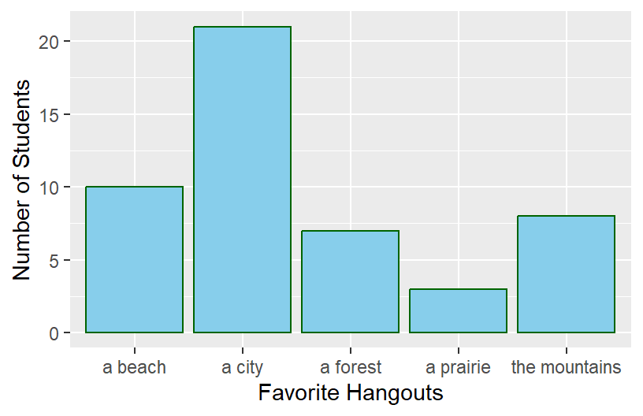
There was some variability in these answers, but a fairly dominant preference towards the city
Example 2: Temperature Preferences
Students were asked about their ideal outdoor temperature, in degrees Celsius. How did they answer? What was the typical response? What was the range in responses? Were there any outliers? Build and interpret 2 plots that help address these questions.
ggplot(survey, aes(x=fav_temp_c)) +geom_histogram(color="blue", fill="red", binwidth =5) +labs(x="Favorite Temperature (Celsius)", y="Number of Students")
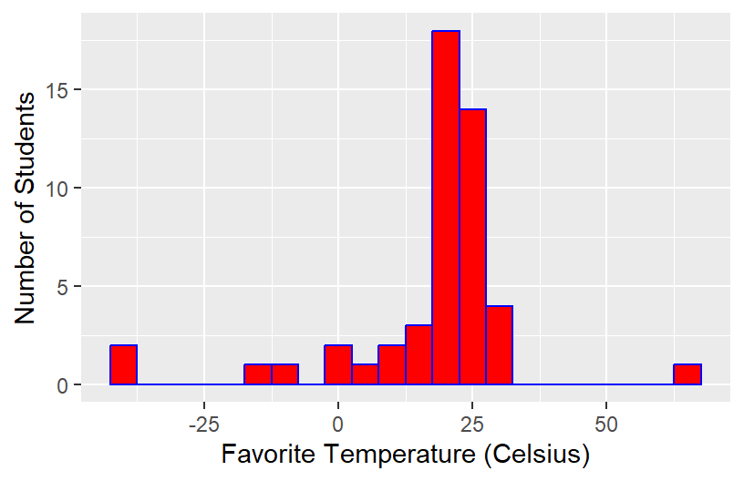
#as we can see, there are some pretty far outliers on both the warm and cold sides, bringing the range to to somewhere around -37 to 62. it makes the trends near the center a little hard to see; this could make a density plot usefulggplot(survey, aes(x=fav_temp_c)) +geom_density(color="blue", fill="red") +labs(x="Favorite Temperature (Celsius)", y="Fraction of Students")
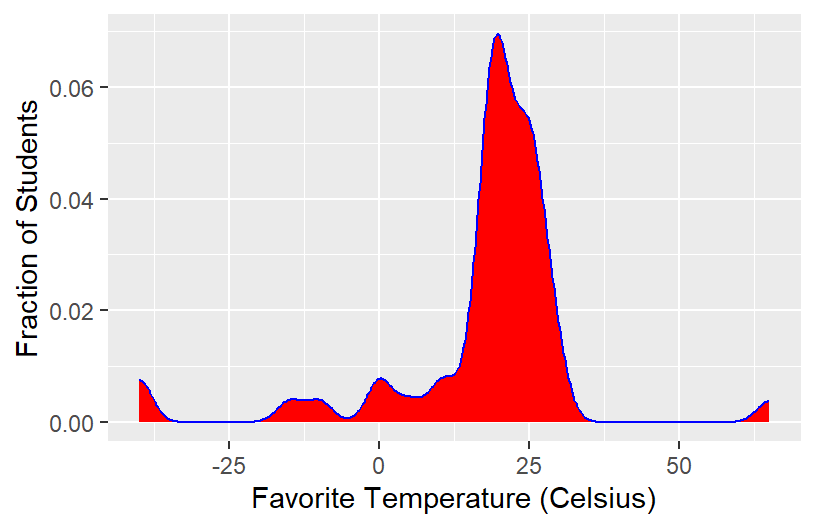
#this pretty nicely places the mode of the dataset somewhere around 20
Bar Charts vs. Histograms
Bar charts & histograms can appear pretty similar, but they do different things.
Bar charts count up the number of observations of each outcome of a variable. They’re good for categorical variables, or quantitative variables with only a handful of possible outcomes.
Histograms count up the number of observations that fall into different numerical ranges of variable. They’re good for quantitative variables, especially those with many different observed outcomes.
8.2 New stuff
Thus far, we’ve been studying one variable at a time, using univariate plots. But once we get a sense of how individual variables behave on their own, our questions often turn to relationships among variables. For example, in our hikes data:
How much time does it take to complete a hike? ——> How is time related to a hike’s elevation? What about its length?
How does difficult rating vary from hike to hike? ——-> How is difficulty rating related to a hike’s ascent?
8.2.1 Exploring relationships
Exploring univariate patterns often sparks follow-up questions about relationships between 2+ variables. Often, but not always, variables take on specific roles:
response variable: the variable whose variability we would like to explain (time to complete a hike)
predictors: variables that might explain some of the variability in the response (a hike’s elevation or length)
Visualizations can help explore:
relationship trends (direction and form)
relationship strength (degree of variability from the trend)
outliers in the relationship
Example 3
For each pair of variables below, sketch on paper a visualization of their relationship. Focus on general viz process, don’t worry about the exact details. The data here are totally made up.
3pm temperature (response) vs 9am temperature (predictor)
rain_today location
1 no A
2 no A
3 no A
4 no A
5 yes A
6 no A
7 yes A
8 no B
9 yes B
10 yes B
11 no B
12 yes B
Think: How might we modify the below bar plot of location to distinguish between days on which it did or didn’t rain? We could subdivide the bars based on rained and didnt, either vertically (to represent a whole) or horizontally (to be represented independently)
ggplot(weather, aes(x = location)) +geom_bar()
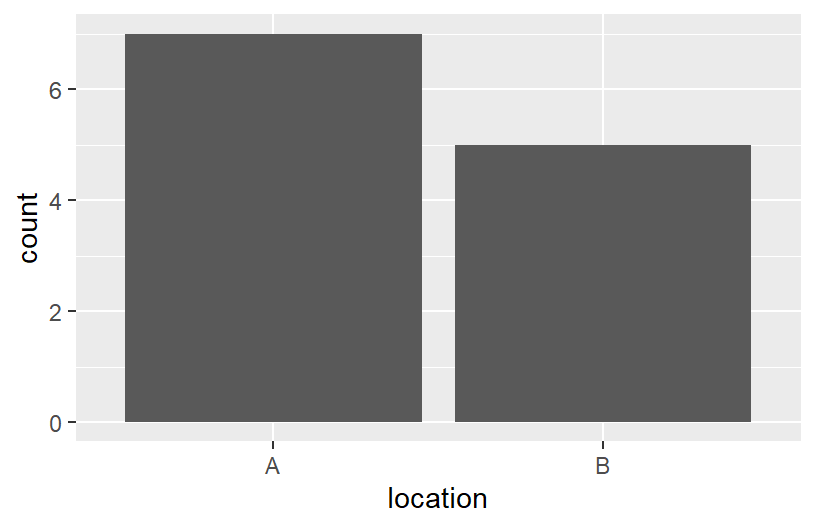
8.2.2 General guidance for building bivariate plots
As with univariate plots, an appropriate visualization for the relationship between 2 variables depends upon whether the variables are quantitative or categorical. In general:
Each quantitative variable requires a new axis (or a quantitative scale if we run out of axes).
Each categorical variable requires a new way to “group” the graphic (eg: using colors, shapes, separate facets, etc)
For visualizations in which overlap in glyphs or plots obscures the patterns, try faceting or transparency.
8.3 Exercises (required)
Github user Tony McGovern has compiled and made available 2020/2016/2012 presidential election results for most of 3000+ U.S. counties, except Alaska. (Image: Wikimedia Commons)
A wrangled version of this data, is imported below, after being combined with:
2013 county-level demographics from the df_county_demographics data set from the choroplethr R package
Run each chunk below to build up a a scatterplot of repub_pct_20 vs repub_pct_16 with different glyphs representing each county. Address or think about any prompts in the comments (#).
# Set up the plotting frame# How does this differ than the frame for our histogram of repub_pct_20 alone?ggplot(elections, aes(y = repub_pct_20, x = repub_pct_16))
# Add a layer of points for each county# Take note of the geom!ggplot(elections, aes(y = repub_pct_20, x = repub_pct_16)) +geom_point()
# Change the shape of the points# What happens if you change the shape to another number?ggplot(elections, aes(y = repub_pct_20, x = repub_pct_16)) +geom_point(shape =20)
# YOU TRY: Modify the code to make the points "orange"# NOTE: Try to anticipate if "color" or "fill" will be useful here. Then try both.ggplot(elections, aes(y = repub_pct_20, x = repub_pct_16)) +geom_point(color="orange")
#color seems cuz there are hollow shapes and also they seem vectory
# Add a layer that represents each county by the state it's in# Take note of the geom and the info it needs to run!str(elections)ggplot(elections, aes(y = repub_pct_20, x = repub_pct_16)) +geom_text(aes(label = state_abbr))
Exercise 3: Reflect
Summarize the relationship between the Republican support in 2020 and 2016. Be sure to comment on: - the strength of the relationship (weak/moderate/strong)
- the direction of the relationship (positive/negative)
- outliers (in what state do counties deviate from the national trend? Any ideas why this might be the case?)
Republican support in 2016 had a somewhat strong positive relationship with republican support in 2020, although there was a significant number of outliers, almost all of any size with republican deviations, particularly in Texas and Utah, and especially Texan counties that leaned blue in 2016. This could possibly relate to either the refugee crisis that emerged on the southern border in this period among other possible factors ### Exercise 4: Visualizing trend {.unnumbered}
The trend of the relationship between repub_pct_20 and repub_pct_16 is clearly positive and (mostly) linear. We can highlight this trend by adding a model “smooth” to the plot:
ggplot(elections, aes(y = repub_pct_20, x = repub_pct_16)) +geom_point() +geom_smooth()
Part a
Construct a new plot that contains the model smooth but does not include the individual point glyphs.
ggplot(elections, aes(y = repub_pct_20, x = repub_pct_16)) +geom_smooth()
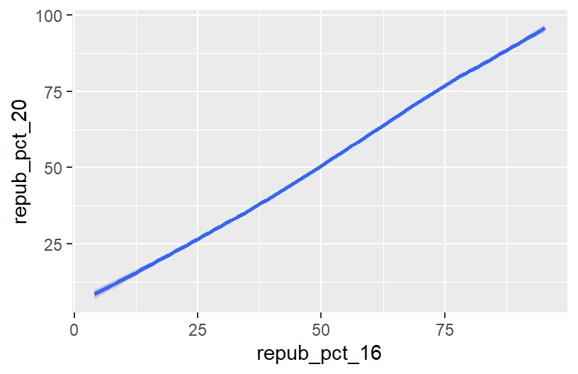
Part b
By default, geom_smooth() adds a smooth, localized model line. To examine the “best” linear model, we can specify method = "lm". It’s pretty similar in this example!
ggplot(elections, aes(y = repub_pct_20, x = repub_pct_16)) +geom_point() +geom_smooth(method ="lm")
Exercise 5: Your Turn
To examine how the 2020 results are related to some county demographics, construct scatterplots of repub_pct_20 vs median_rent, and repub_pct_20 vs median_age. Summarize the relationship between these two variables and comment on which is the better predictor of repub_pct_20, median_rent or median_age. Low median rents median rents are a better predictor of how red a county voted in 2020 than median age. low median rent counties are somewhat densly clustered around around in a range between 83 and 63% republican support. while some correlation exists between median age and republican support in 2020, the range with the most counties, around 40, is fairly scattered, and a mean line is fairly flat in comparison with rent
# Scatterplot of repub_pct_20 vs median_rentggplot(elections, aes(y = repub_pct_20, x = median_rent)) +geom_point() +geom_smooth()
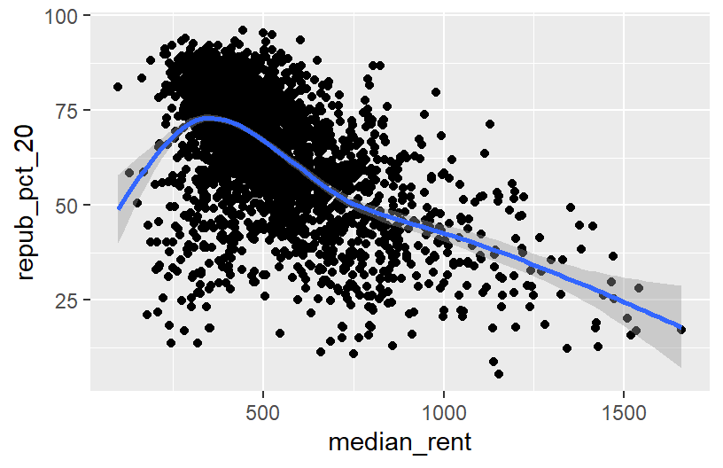
# Scatterplot of repub_pct_20 vs median_ageggplot(elections, aes(y = repub_pct_20, x = median_age)) +geom_point() +geom_smooth()
Exercise 6: A Sad Scatterplot
Next, let’s explore the relationship between a county’s 2020 Republican support repub_pct_20 and the historical political trends in its state. In this case repub_pct_20 is quantitative, but historical is categorical. Explain why a scatterplot might not be an effective visualization for exploring this relationship. (What questions does / doesn’t it help answer?) because there are only three values for the categorical variables, individual points will be tightly clustered and it will be hard to see densities or numbers of counties within each category
ggplot(elections, aes(y = repub_pct_20, x = historical)) +geom_point()
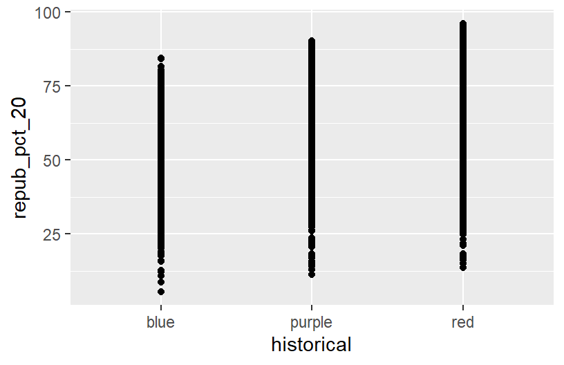
Exercise 7: Quantitative vs Categorical – Violins & Boxes
Though the above scatterplot did group the counties by historical category, it’s nearly impossible to pick out meaningful patterns in 2020 Republican support in each category. Let’s try adding 2 different geom layers to the frame:
Box plots are constructed from five numbers - the minimum, 25th percentile, median, 75th percentile, and maximum value of a quantitative variable:
REFLECT:
Summarize what you’ve learned about the 2020 Republican county-level support within and between red/purple/blue states. It seems that while the median in blue, purple, and red counties all was above 50% republic, there was a very long dem skew tail, including a very large number out outliers, particularly in historically red counties. This skew tail was fairly dense in blue counties, as well
Exercise 8: Quantitative vs Categorical – Intuition Check
Be Quick
Don’t spend more than 3 minutes on this!
We can also visualize the relationship between repub_pct_20 and historical using our familiar density plots. In the plot below, notice that we simply created a separate density plot for each historical category. (The plot itself is “bad” but we’ll fix it below.) Try to adjust the code chunk below, which starts with a density plot of repub_pct_20 alone, to re-create this image.
Exercise 9: Quantitative vs Categorical – Density Plots
Work through the chunks below and address the comments therein.
# Name two "bad" things about this plotggplot(elections, aes(x = repub_pct_20, fill = historical)) +geom_density()#I was so close! anyways, first, the peaks of the graph are covered by eachother, and secondly the colors of the fill do not match the titles of the variables, which is confusing because they are named after colors
# What does scale_fill_manual do?ggplot(elections, aes(x = repub_pct_20, fill = historical)) +geom_density() +scale_fill_manual(values =c("blue", "purple", "red"))#scale_fill_manual allows you to specify the colors in a fill of this sort
# What does alpha = 0.5 do?# Play around with different values of alpha, between 0 and 1ggplot(elections, aes(x = repub_pct_20, fill = historical)) +geom_density(alpha =0.3) +scale_fill_manual(values =c("blue", "purple", "red"))#alpha changes the transparency of each fill
# What does facet_wrap do?!ggplot(elections, aes(x = repub_pct_20, fill = historical)) +geom_density() +scale_fill_manual(values =c("blue", "purple", "red")) +facet_wrap(~ historical)#woah! facet_wrap is able to add another dimension of data it looks like by splitting our viz into several side-by-side graphs
# Let's try a similar grouping strategy with a histogram instead of density plot.# Why is this terrible?ggplot(elections, aes(x = repub_pct_20, fill = historical)) +geom_histogram(color ="white") +scale_fill_manual(values =c("blue", "purple", "red"))#this sucks because not only does it overlap, but because it goes by count instead of density, its harder to judge trends between the three categories, because of the different numbers of each. in fact, its not neccesarily clear how each bar is overlapping the other at all. each bin also implies that they are making up one part of a something connected, rather than just have the same voting habits in 2020
Exercise 10
We’ve now learned 3 (of many) ways to visualize the relationship between a quantitative and categorical variable: side-by-side violins, boxplots, and density plots.
Which do you like best?
What is one pro of density plots relative to boxplots?
What is one con of density plots relative to boxplots? I think I prefer density plots because they are easier to read at a glance and provide granular knowledge about densities, although boxplots note outliers in a very helpful way, and do some of the analysis for you (like finding medians and percentiles).
Exercise 11: Categorical vs Categorical – Intuition Check
Finally, let’s simply explore who won each county in 2020 (winner_20) and how this breaks down by historical voting trends in the state. That is, let’s explore the relationship between 2 categorical variables! Following the same themes as above, we can utilize grouping features such as fill/color or facets to distinguish between different categories of winner_20 and historical.
Be Quick
Spend at most 5 minutes on the following intuition check. Adjust the code below to recreate the following two plots.
# Plot 1: adjust this to recreate the top plotggplot(elections, aes(x = historical, fill = winner_20)) +geom_bar() +scale_fill_manual(values =c("salmon","turquoise3"))
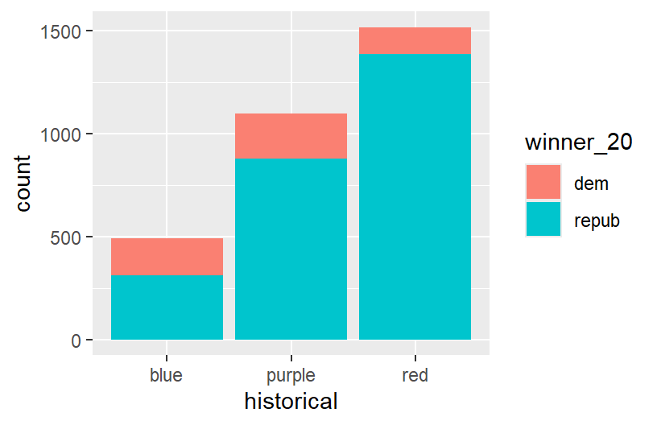
#i think i got the color too lol. weird to me that theres no teal
# Plot 2: adjust this to recreate the bottom plotggplot(elections, aes(x = winner_20)) +geom_bar() +facet_wrap(~ historical)
Exercise 12: Categorical vs Categorical
Construct the following 4 bar plot visualizations.
# A stacked bar plot# How are the "historical" and "winner_20" variables mapped to the plot, i.e. what roles do they play?ggplot(elections, aes(x = historical, fill = winner_20)) +geom_bar()#oh lol the color was automatic
# A faceted bar plotggplot(elections, aes(x = winner_20)) +geom_bar() +facet_wrap(~ historical)
# A side-by-side bar plot# Note the new argument to geom_barggplot(elections, aes(x = historical, fill = winner_20)) +geom_bar(position ="dodge")
# A proportional bar plot# Note the new argument to geom_barggplot(elections, aes(x = historical, fill = winner_20)) +geom_bar(position ="fill")
Part a
Name one pro and one con of using the “proportional bar plot” instead of one of the other three options.
The way it fills the space makes the ratio much easier to discern, although of course we aren’t able to see granular quantities
Part b
What’s your favorite bar plot from part and why? I like both the side-by-side and the faceted: they’re handsome and easy to read and compare, and while the faceted is more quirky, the side-by-side is probably more readerly
Exercise 13: Practice (now or later)
Decide
Decide what’s best for you:
Try this extra practice now.
Reflect on the above exercises and come back to this extra practice later (but before the next class).
Import some daily weather data from a few locations in Australia:
'data.frame': 2367 obs. of 24 variables:
$ date : chr "2020-01-01" "2020-01-02" "2020-01-03" "2020-01-04" ...
$ location : chr "Wollongong" "Wollongong" "Wollongong" "Wollongong" ...
$ mintemp : num 17.1 17.7 19.7 20.4 19.8 18.3 19.9 20.1 19.8 20.5 ...
$ maxtemp : num 23.1 24.2 26.8 35.5 21.4 22.9 25.6 23.2 23.1 25.4 ...
$ rainfall : num 0 0 0 0 0 0 0.8 1.6 0 0 ...
$ evaporation : num NA NA NA NA NA NA NA NA NA NA ...
$ sunshine : num NA NA NA NA NA NA NA NA NA NA ...
$ windgustdir : chr "SSW" "SSW" "NE" "SSW" ...
$ windgustspeed: int 39 37 41 78 57 35 44 41 39 56 ...
$ winddir9am : chr "SSW" "S" "NNW" "NE" ...
$ winddir3pm : chr "SSE" "ENE" "NNE" "NNE" ...
$ windspeed9am : int 20 13 7 15 31 17 30 31 24 19 ...
$ windspeed3pm : int 15 15 17 17 35 20 7 33 26 39 ...
$ humidity9am : int 69 72 72 77 70 71 76 77 76 79 ...
$ humidity3pm : int 64 54 71 69 75 71 72 76 79 76 ...
$ pressure9am : num 1015 1020 1018 1009 1019 ...
$ pressure3pm : num 1014 1018 1013 1004 1020 ...
$ cloud9am : int 8 7 6 NA NA NA NA 8 NA NA ...
$ cloud3pm : int 1 1 NA NA 7 NA NA NA NA NA ...
$ temp9am : num 19.1 19.8 23.4 24.5 20.7 20.9 22.9 21.3 21.2 23 ...
$ temp3pm : num 22.9 23.6 25.7 26.7 20 22.6 24.9 22.2 22.2 25.1 ...
$ raintoday : chr "No" "No" "No" "No" ...
$ risk_mm : num 0 0 0 0 0 0.8 1.6 0 0 1 ...
$ raintomorrow : chr "No" "No" "No" "No" ...
Construct plots that address the research questions in each chunk. You might make multiple plots–there are many ways to do things!. However, don’t just throw spaghetti at the wall.
Reflect before doing anything. What types of variables are these? How might you plot just 1 of the variables, and then tweak the plot to incorporate the other?
# How do 3pm temperatures (temp3pm) differ by location?#I have to compare many entries between a categorical variable with three values and a quantitative variable. A faceted or overlayed density plot would work bestggplot(weather, aes(x=temp3pm)) +geom_density(fill="cadetblue2")+facet_wrap(~ location)
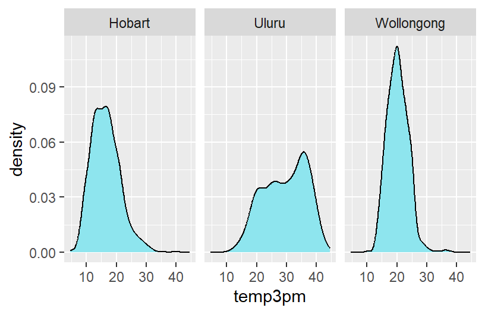
#In Hobart, 3pm temperatures range mostly from 13 to 17 degrees, although not neccesarily, Uluru's 3pm temperatures broadly range from 20 to roughly 36, but more often rest near 36, and Wollongong's 3pm temperatures almost always hover somewhere close to 20 degrees
# How might we predict the 3pm temperature (temp3pm) by the 9am temperature (temp9am)?#a scatter would probably work best, since its good for comparing two quantitative variablesggplot(weather, aes(x=temp9am,y=temp3pm)) +geom_point()
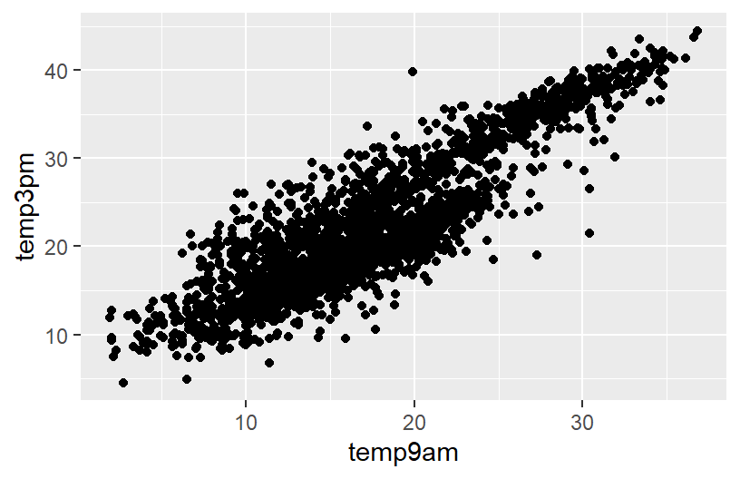
# How do the number of rainy days (raintoday) differ by location?#two categoricals go well in a subdivided bar of some sortggplot(weather, aes(x=raintoday)) +geom_bar(fill="maroon1") +facet_wrap(~ location)
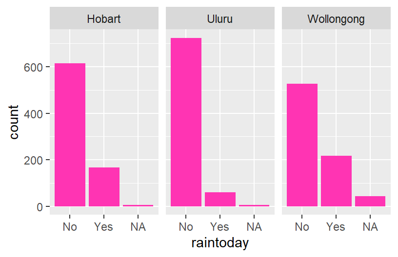
#but wait! wouldn't it be nicer to instead fill a bar with yes and no for each location, so that we can easily compare how often it rains per location? in that case...ggplot(weather, aes(x=location, fill=raintoday))+geom_bar()
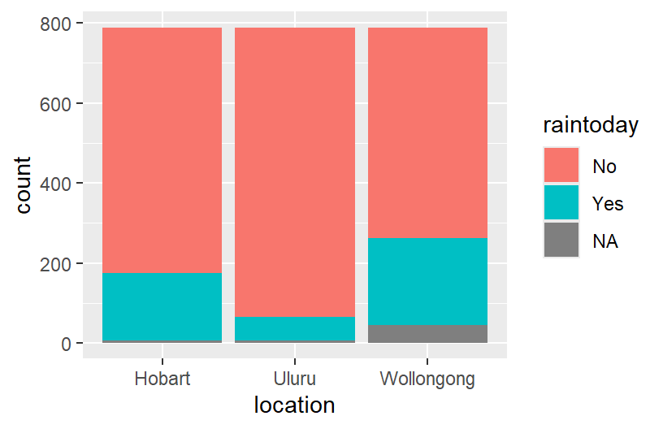
#this is also good for demonstrating that indeed, all three locations have the same total number of measurements. To be honest, both work
8.4 Exercises (optional)
The above visualizations are foundational and important. But they’re not the only way to visualize the variables in our dataset.
Optional Exercise 1: Many Categories
Suppose we wanted to better understand how the 2020 Republican support varied from county to county within each state. Since repub_pct_20 is quantitative and state_abbr is categorical, we could make a density plot of repub_pct_20 for each state. Reflect on why this is bad.
ggplot(elections, aes(x = repub_pct_20, fill = state_abbr)) +geom_density(alpha =0.5)
When we want to compare the distribution of some quantitative outcome among many groups / categories, a ridgeline plot can be a good option. These are also called joy plots, named after the album cover for “Unknown Pleasures” by Joy Division. (Look it up!) To make a ridgeline plot, we can use the geom_density_ridges() function from the ggridges package.
# Install ggridges packagelibrary(ggridges)# Make our first joy plot# THINK: What DON'T you like about this?ggplot(elections, aes(x = repub_pct_20, y = state_abbr)) +geom_density_ridges()
# Let's put the states in order by Republican support, not alphabet# How do you think fct_reorder works? We'll learn about this later in the semester.ggplot(elections, aes(x = repub_pct_20, y =fct_reorder(state_abbr, repub_pct_20))) +geom_density_ridges(alpha =0.5)
# YOUR TURN: color/fill the ridges according to a state's historical voting patterns # and add meaningful axis labels
Follow-up questions
Which states tend to have the most variability in outcomes from county to county? The least?
What other interesting patterns do you notice?
Does this plot prompt any other questions?
Optional Exercise 2: Total Outcomes by State
Let’s import some new data and counts up the total votes (Republican and Democratic) by state, not county. This was wrangled from the elections data!
For example, we might make a scatterplot of the 2020 vs 2016 outcomes:
ggplot(elections_by_state, aes(y = repub_pct_20, x = repub_pct_16)) +geom_point()
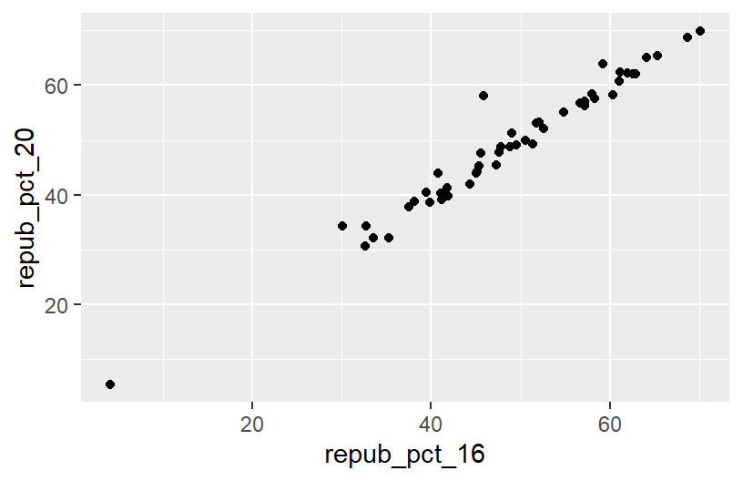
BUT this isn’t the easiest way to communicate or identify the changes from 1 year to the next.
# YOU TRY# Start by creating a "scatterplot" of state_abbr (y-axis) by 2020 Republican support on the x-axis# Color the points red# Scroll to solutions below when you're ready
# Check it outggplot(elections_by_state, aes(x = repub_pct_20, y = state_abbr)) +geom_point(color ="red")
# YOU TRY# Reorder the states in terms of their 2020 Republican support (not alphabet)# Scroll to solutions below when you're ready
# Check it outggplot(elections_by_state, aes(x = repub_pct_20, y =fct_reorder(state_abbr, repub_pct_20))) +geom_point(color ="red")
# Finally, add ANOTHER layer of points for the 2016 outcomes# What info does this new geom_point() layer need to run?ggplot(elections_by_state, aes(x = repub_pct_20, y =fct_reorder(state_abbr, repub_pct_20))) +geom_point(color ="red") +geom_point(aes(x = repub_pct_16, y = state_abbr))
Reflect on the following
What do you think this plot needs? Try it! You might need to do some digging online.
Summarize the main takeaways from the plots. Which states changed the most from 2016 to 2020? The least? Where did the Republican support increase? Where did it decrease?
What other questions are you left with?
8.5 Solutions
Click for Solutions
# Import datasurvey <-read.csv("https://hash-mac.github.io/stat112site-s25/data/survey.csv")# How many students have now filled out the survey?nrow(survey)
[1] 49
# What type of variables do we have?str(survey)
'data.frame': 49 obs. of 4 variables:
$ cafe_mac : chr "mashed potatoes" "is tasty" "burger" "caesar salad" ...
$ minutes_to_campus: int 5 5 5 12 0 10 5 0 0 5 ...
$ fav_temp_c : num 26 28 19 18 24 -10 21 25 18 25 ...
$ hangout : chr "the mountains" "a city" "a forest" "a forest" ...
Example 1: Hangout preferences
# Attach a package needed to use the ggplot functionlibrary(tidyverse)# Make a ggplotggplot(survey, aes(x = hangout)) +geom_bar()
Exercise 1: quantitative vs quantitative intuition check
See next exercise.
Exercise 2: 2 quantitiative variables
# Set up the plotting frame# How does this differ than the frame for our histogram of repub_pct_20 alone?# ANSWER: we added a y-axis variableggplot(elections, aes(y = repub_pct_20, x = repub_pct_16))
# Add a layer of points for each county# Take note of the geom: geom_pointggplot(elections, aes(y = repub_pct_20, x = repub_pct_16)) +geom_point()
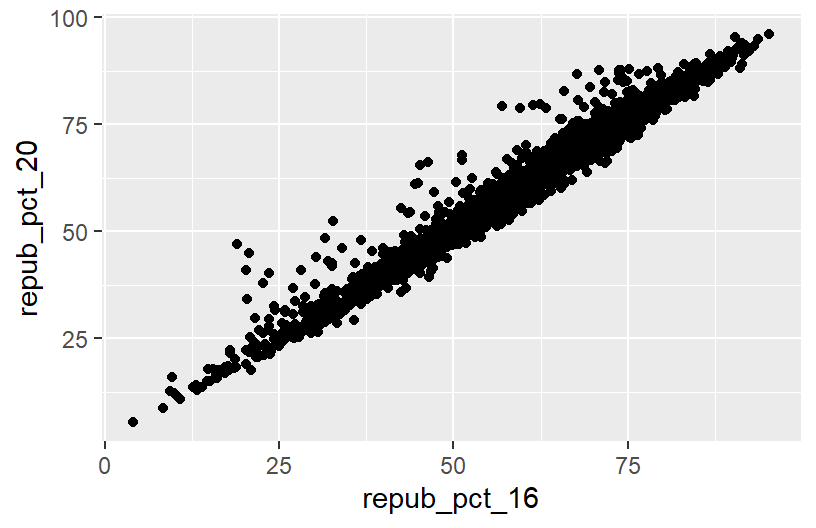
# Change the shape of the points# What happens if you change the shape to another number?ggplot(elections, aes(y = repub_pct_20, x = repub_pct_16)) +geom_point(shape =3)
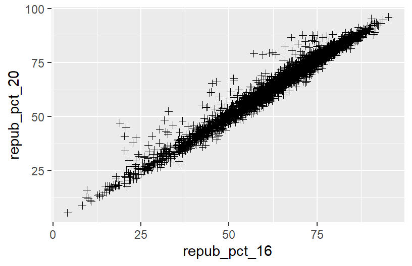
# YOU TRY: Modify the code to make the points "orange"# NOTE: Try to anticipate if "color" or "fill" will be useful here. Then try both.ggplot(elections, aes(y = repub_pct_20, x = repub_pct_16)) +geom_point(color ="orange")
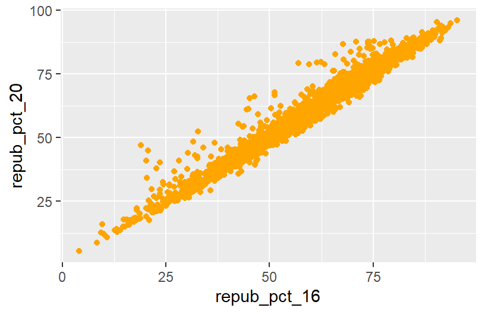
# Add a layer that represents each county by the state it's in# Take note of the geom and the info it needs to run!ggplot(elections, aes(y = repub_pct_20, x = repub_pct_16)) +geom_text(aes(label = state_abbr))
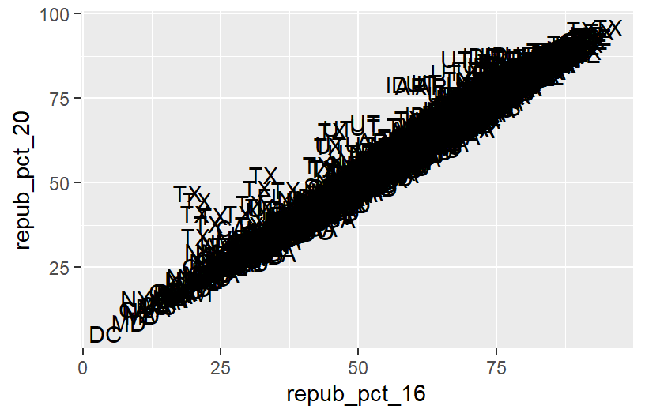
Exercise 3: Reflect
There’s a strong, positive association – the higher the Republican support in 2016, the higher it was in 2020. There are some counties in Texas and Utah where the R support in 2020 was disproportionately higher than in 2016.
Exercise 4: Visualizing trend
ggplot(elections, aes(y = repub_pct_20, x = repub_pct_16)) +geom_point() +geom_smooth()
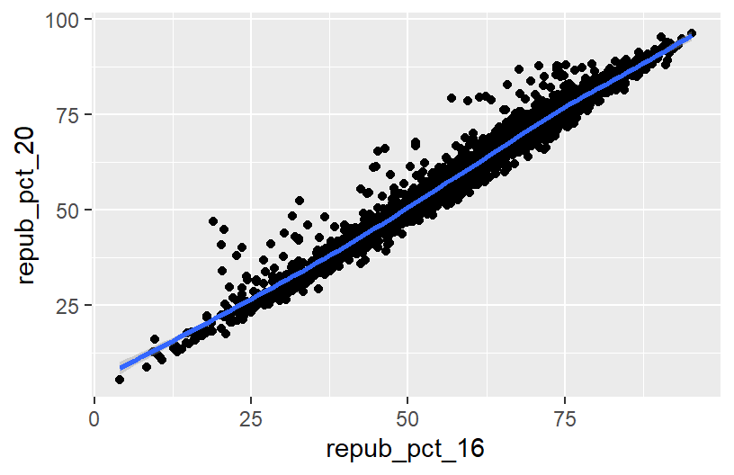
Part a
ggplot(elections, aes(y = repub_pct_20, x = repub_pct_16)) +geom_smooth()
Part b
ggplot(elections, aes(y = repub_pct_20, x = repub_pct_16)) +geom_point() +geom_smooth(method ="lm")
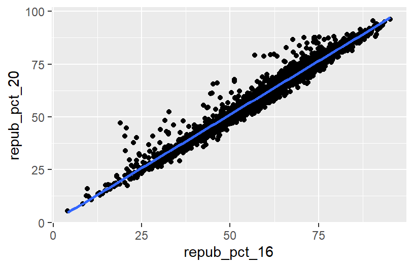
Exercise 5: Your turn
There’s a moderate, positive association between R support and median age – the older the average age in a county, the higher the R support tends to be. However, there’s a stronger, negative association between R support and median rent – the higher the rent (a proxy for cost of living), the lower the R support tends to be.
# Scatterplot of repub_pct_20 vs median_rentggplot(elections, aes(y = repub_pct_20, x = median_rent)) +geom_point()
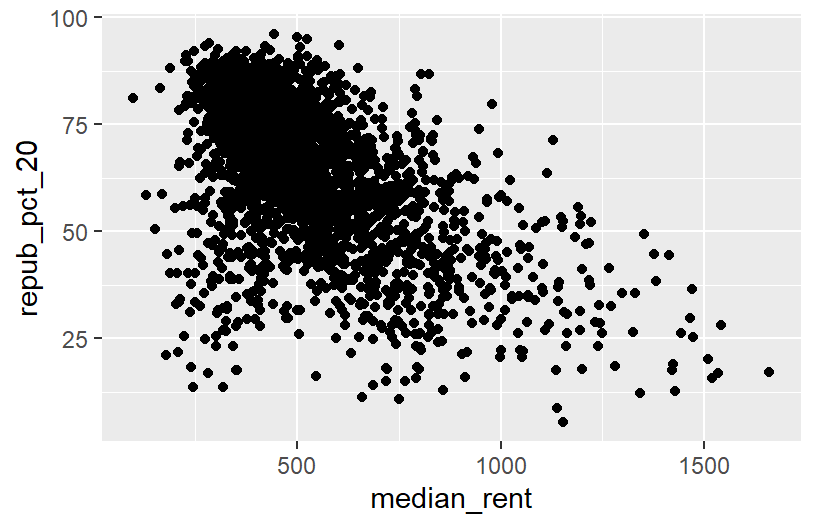
# Scatterplot of repub_pct_20 vs median_ageggplot(elections, aes(y = repub_pct_20, x = median_age)) +geom_point()
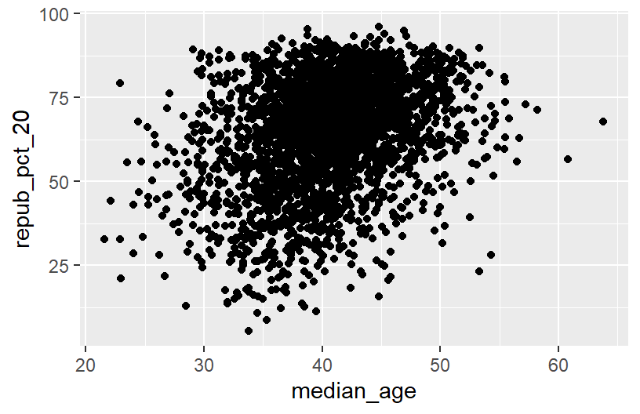
Exercise 6: A sad scatterplot
See next exercise.
Exercise 7: quantitative vs categorical – violins & boxes
There’s quite a bit of range in county-level R support within blue, purple, and red states. However, R support tends to be higher in red states and lower in blue states.
Exercise 8: quantitative vs categorical – intuition check
See next exercise.
Exercise 9: quantitative vs categorical – density plots
# The colors used don't match up with the blue, purple, red labels# The density plots are on top of each otherggplot(elections, aes(x = repub_pct_20, fill = historical)) +geom_density()
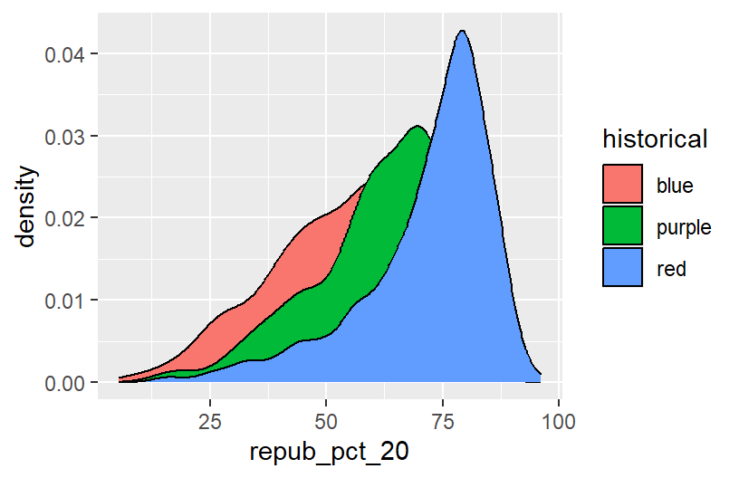
# scale_fill_manual "hard codes" or defines what colors to use for the fill categoriesggplot(elections, aes(x = repub_pct_20, fill = historical)) +geom_density() +scale_fill_manual(values =c("blue", "purple", "red"))
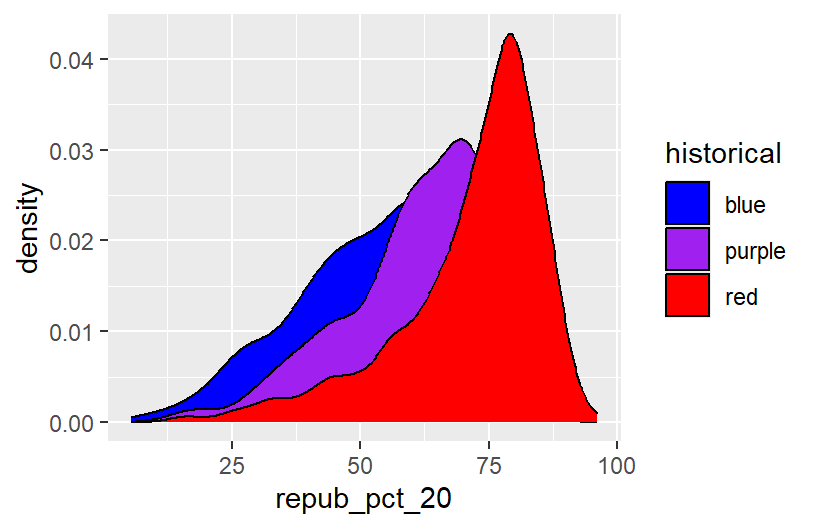
# alpha = 0.5 adds transparency# the closer alpha is to 0, the more transparent.# the closer alpha is to 1, the more opaque.ggplot(elections, aes(x = repub_pct_20, fill = historical)) +geom_density(alpha =0.5) +scale_fill_manual(values =c("blue", "purple", "red"))
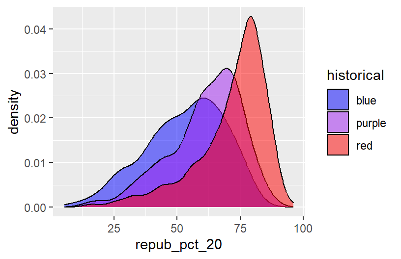
# facet_wrap separates the density plots into "facets" for each historical groupggplot(elections, aes(x = repub_pct_20, fill = historical)) +geom_density() +scale_fill_manual(values =c("blue", "purple", "red")) +facet_wrap(~ historical)
# Let's try a similar grouping strategy with a histogram instead of density plot.# Why is this terrible?ggplot(elections, aes(x = repub_pct_20, fill = historical)) +geom_histogram(color ="white") +scale_fill_manual(values =c("blue", "purple", "red"))
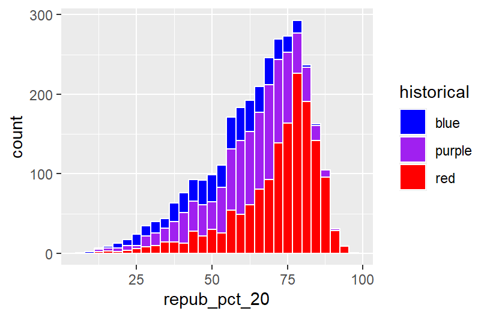
Exercise 10
One pro of density plots relative to boxplots: doesn’t oversimplify the data / boil the data down to just 5 numbers.
Name one con of density plots relative to boxplots: boxplots can be easier to interpret
Exercise 11: categorical vs categorical intuition check
see exercise below
Exercise 12: categorical vs categorical
# A stacked bar plot# historical = x axis / bar categories# winner_20 = fills the barsggplot(elections, aes(x = historical, fill = winner_20)) +geom_bar()
# A faceted bar plotggplot(elections, aes(x = winner_20)) +geom_bar() +facet_wrap(~ historical)
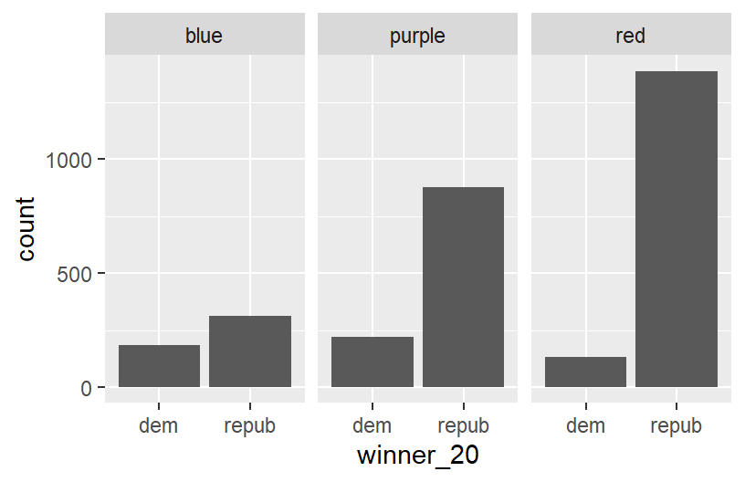
# A side-by-side bar plot# Note the new argument to geom_barggplot(elections, aes(x = historical, fill = winner_20)) +geom_bar(position ="dodge")
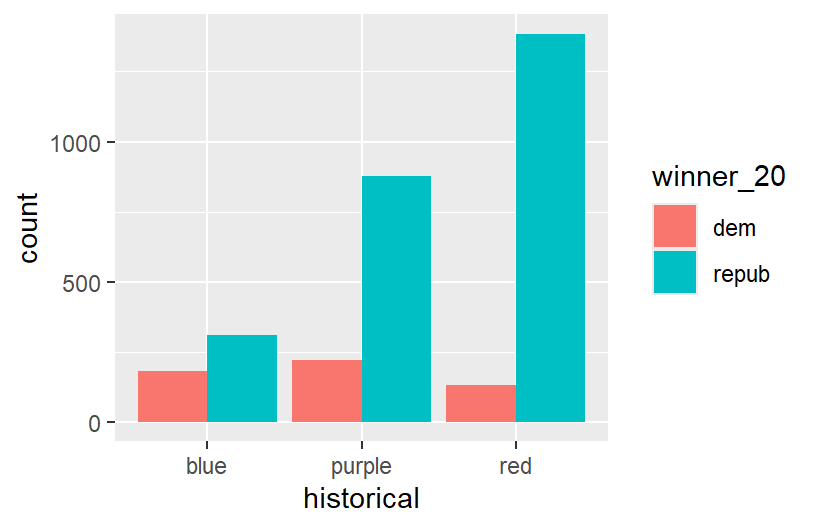
# A proportional bar plot# Note the new argument to geom_barggplot(elections, aes(x = historical, fill = winner_20)) +geom_bar(position ="fill")
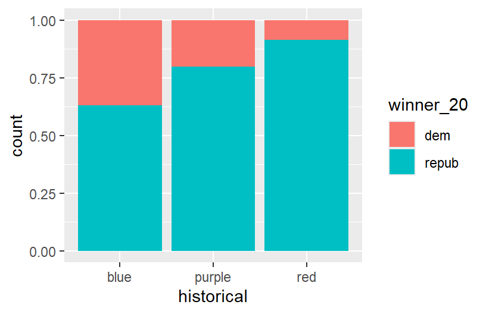
Part a
pro = easier to compare the relative outcomes in blue vs purple vs red states con = lose track of how many counties fall into blue vs purple vs red states
Exercise 13: Practice (now or later)
weather <-read.csv("https://mac-stat.github.io/data/weather_3_locations.csv")# How do 3pm temperatures (temp3pm) differ by location?ggplot(weather, aes(x = temp3pm, fill = location)) +geom_density(alpha =0.5)
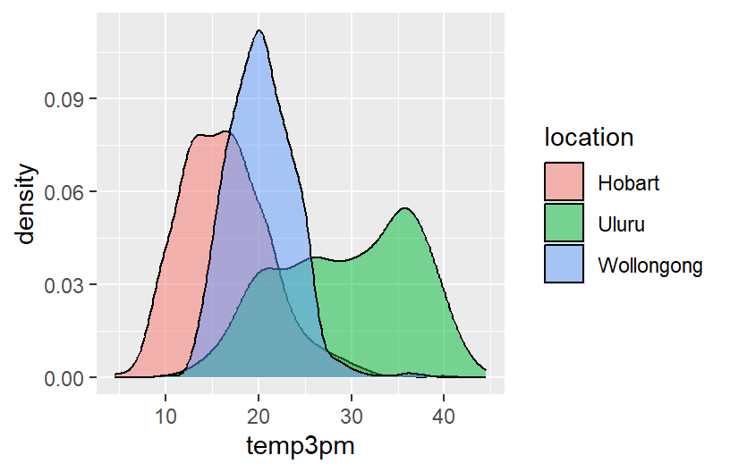
ggplot(weather, aes(y = temp3pm, x = location)) +geom_boxplot()
# How might we predict the 3pm temperature (temp3pm) by the 9am temperature (temp9am)?ggplot(weather, aes(y = temp3pm, x = temp9am)) +geom_point()
# How do the number of rainy days (raintoday) differ by location?ggplot(weather, aes(x = location, fill = raintoday)) +geom_bar()
Optional exercise 1: Dealing with lots of categories
# Install ggridges packagelibrary(ggridges)# Make our first joy plot# THINK: What DON'T you like about this?ggplot(elections, aes(x = repub_pct_20, y = state_abbr)) +geom_density_ridges()
# Let's put the states in order by Republican support, not alphabet# How do you think fct_reorder works? We'll learn about this later in the semester.ggplot(elections, aes(x = repub_pct_20, y =fct_reorder(state_abbr, repub_pct_20))) +geom_density_ridges(alpha =0.5)
# YOUR TURN: color/fill the ridges according to a state's historical voting patterns # and add meaningful axis labelsggplot(elections, aes(x = repub_pct_20, y =fct_reorder(state_abbr, repub_pct_20), fill = historical)) +geom_density_ridges(alpha =0.5) +labs(y ="state", x ="2020 Republican support (%)") +scale_fill_manual(values =c("blue", "purple", "red"))
Optional exercise 2: total outcomes by state
elections_by_state <-read.csv("https://mac-stat.github.io/data/election_2020_by_state.csv")ggplot(elections_by_state, aes(y = repub_pct_20, x = repub_pct_16)) +geom_point()
# YOU TRY# Start by creating a "scatterplot" of state_abbr (y-axis) by 2020 Republican support on the x-axis# Color the points redggplot(elections_by_state, aes(x = repub_pct_20, y = state_abbr)) +geom_point(color ="red")
# YOU TRY# Reorder the states in terms of their 2020 Republican support (not alphabet)ggplot(elections_by_state, aes(x = repub_pct_20, y =fct_reorder(state_abbr, repub_pct_20))) +geom_point(color ="red")
# Finally, add ANOTHER layer of points for the 2016 outcomes# What info does this new geom_point() layer need to run?ggplot(elections_by_state, aes(x = repub_pct_20, y =fct_reorder(state_abbr, repub_pct_20))) +geom_point(color ="red") +geom_point(aes(x = repub_pct_16, y = state_abbr))
Source Code
---title: "Bivariate Viz"number-sections: trueexecute: warning: falsefig-height: 2.75fig-width: 4.25fig-env: 'figure'fig-pos: 'h'fig-align: centercode-fold: false---::: {.callout-caution title="Learning Goals"}- Explore how to build and interpret visualizations of **bivariate**, i.e. two variable, relationships.:::::: {.callout-note title="Additional Resources"}For more information about the topics covered in this chapter, refer to the resources below:- [ggplot demo (YouTube)](https://www.youtube.com/watch?v=1SYzVMH62yw&list=PLyEH7o09I467e8zck95awweg_bGuLzqjz&index=8) by Lisa Lendway- [common ggplot mistakes (YouTube)](https://www.youtube.com/watch?v=j7F-IdJAOJs&list=PLyEH7o09I467e8zck95awweg_bGuLzqjz&index=8) by Lisa Lendway- [Visualizing amounts (html)](https://clauswilke.com/dataviz/visualizing-amounts.html) by Wilke- [Visualizing many distributions at once (html)](https://clauswilke.com/dataviz/boxplots-violins.html) by Wilke:::## ReviewLet's review some *univariate* concepts and code using our class survey data. If the answers aren't at the top of your mind, don't fret! We've barely started speaking this new language, and learned a ton of vocab last week, so you naturally won't remember it all.```{r}# Import datasurvey <-read.csv("https://hash-mac.github.io/stat112site-s25/data/survey.csv")# How many students have now filled out the survey?nrow(survey)# What type of variables do we have?str(survey)```### Example 1: Hangout Preferences {-}Students were asked, in that moment, where they'd most like to spend time outside. How did they answer? Was there a lot of agreement or a lot of variability in answers? Build and interpret a plot that helps address these questions while reviewing:- "code as communication"- connecting with the components of a plot: - set up a **frame** - add a **layer** / geometric element - change the **theme**, e.g. axis labels, color, fill```{r}# Attach a package needed to use the ggplot functionlibrary(tidyverse)# Make a ggplotggplot(survey, aes(x=hangout)) +geom_bar(color="darkgreen", fill="skyblue") +labs(x="Favorite Hangouts", y="Number of Students")```There was some variability in these answers, but a fairly dominant preference towards the city```{r echo=FALSE, message=FALSE}library(tidyverse)```### Example 2: Temperature Preferences {-}Students were asked about their ideal outdoor temperature, in degrees Celsius. How did they answer? What was the typical response? What was the range in responses? Were there any outliers? Build and interpret 2 plots that help address these questions.```{r}ggplot(survey, aes(x=fav_temp_c)) +geom_histogram(color="blue", fill="red", binwidth =5) +labs(x="Favorite Temperature (Celsius)", y="Number of Students") #as we can see, there are some pretty far outliers on both the warm and cold sides, bringing the range to to somewhere around -37 to 62. it makes the trends near the center a little hard to see; this could make a density plot usefulggplot(survey, aes(x=fav_temp_c)) +geom_density(color="blue", fill="red") +labs(x="Favorite Temperature (Celsius)", y="Fraction of Students")#this pretty nicely places the mode of the dataset somewhere around 20```::: {.callout-note title="Bar Charts vs. Histograms"}Bar charts & histograms can appear pretty similar, but they do different things.- **Bar charts** count up the number of observations of each outcome of a variable. They're good for *categorical* variables, or *quantitative* variables with only a handful of possible outcomes.- **Histograms** count up the number of observations that fall into different numerical *ranges* of variable. They're good for *quantitative* variables, especially those with many different observed outcomes.:::## New stuffThus far, we've been studying one variable at a time, using *univariate* plots. But once we get a sense of how individual variables behave on their own, our questions often turn to *relationships* among variables. For example, in our `hikes` data:- How much `time` does it take to complete a hike? ------\> How is `time` related to a hike's `elevation`? What about its `length`?- How does difficult `rating` vary from hike to hike? -------\> How is difficulty `rating` related to a hike's `ascent`?### Exploring relationshipsExploring univariate patterns often sparks follow-up questions about **relationships** between 2+ variables. Often, but not always, variables take on specific roles:- **response variable**: the variable whose variability we would like to explain (`time` to complete a hike)- **predictors**: variables that might explain some of the variability in the response (a hike's `elevation` or `length`)Visualizations can help explore:- relationship *trends* (direction and form)- relationship *strength* (degree of variability from the trend)- *outliers* in the relationship#### Example 3 {-}For each pair of variables below, sketch on paper a visualization of their relationship. Focus on general viz process, don't worry about the exact details. The data here are totally made up. a. 3pm temperature (response) vs 9am temperature (predictor)```{r}data.frame(temp_3pm =c(24, 26, 20, 15, 15, 15), temp_9am =c(14, 18, 15, 13, 11, 11))``` b. 3pm temperature (response) vs location (predictor)```{r}weather <-data.frame(temp_3pm =c(24, 26, 20, 15, 15, 0, 40, 60, 57, 44, 51, 75),location =rep(c("A", "B"), each =6))weather```Think: How might we modify the below density plot of `temp_3pm` to distinguish between locations?Could we do two of different colors for each location?```{r}ggplot(weather, aes(x = temp_3pm)) +geom_density()```c. `rain_today` (the response) and `location` (the predictor)```{r}weather <-data.frame(rain_today =c("no", "no", "no", "no", "yes", "no", "yes", "no", "yes", "yes", "no", "yes"),location =c(rep("A", 7), rep("B", 5))) weather```Think: How might we modify the below bar plot of `location` to distinguish between days on which it did or didn't rain?We could subdivide the bars based on rained and didnt, either vertically (to represent a whole) or horizontally (to be represented independently)```{r}ggplot(weather, aes(x = location)) +geom_bar()```### General guidance for building bivariate plotsAs with univariate plots, an appropriate visualization for the relationship between 2 variables depends upon whether the variables are **quantitative** or **categorical**. In general:- Each **quantitative variable** requires a new *axis* (or a quantitative *scale* if we run out of axes).- Each **categorical variable** requires a new way to "group" the graphic (eg: using colors, shapes, separate facets, etc)- For visualizations in which **overlap** in glyphs or plots obscures the patterns, try faceting or transparency.## Exercises (required)[Github user Tony McGovern](https://github.com/tonmcg/US_County_Level_Election_Results_08-20) has compiled and made available 2020/2016/2012 presidential election results for most of 3000+ U.S. counties, except Alaska. (Image: [Wikimedia Commons](https://commons.wikimedia.org/wiki/File:Map_of_USA_with_county_outlines_(black_%26_white).png))A wrangled version of this data, is imported below, after being combined with:- 2013 county-level demographics from the `df_county_demographics` data set from the `choroplethr` R package- historical voting trends in the state in which the county falls (from <https://www.270towin.com/content/blue-and-red-states>): - red = consistently Republican - blue = consistently Democratic - purple = something in between```{r}# Load dataelections <-read.csv("https://mac-stat.github.io/data/election_2020_county.csv")# Check it outhead(elections)```We'll use this data to explore voting outcomes within the U.S.'s 2-party system. Here's a list of candidates by year:| year | Republican candidate | Democratic candidate ||:-----|:---------------------|:---------------------|| 2020 | Donald Trump | Joe Biden || 2016 | Donald Trump | Hillary Clinton || 2012 | Mitt Romney | Barack Obama |### Exercise 0: Review {.unnumbered}#### Part a {.unnumbered}How many, or roughly what percent, of the 3000+ counties did the Republican candidate win in 2020?- Take a guess.Porbably like 68%? maybe like in the low-mid 70s- Then make a plot of the `winner` variable.- Then discuss what follow-up questions you might have (and that our data might help us answer).Woah there! I forgot about populations. ```{r}ggplot(elections, aes(x=winner_20)) +geom_bar(fill="purple")```#### Part b {.unnumbered}The `repub_pct_20` variable provides more detail about the Republican support in each county. Construct a plot of `repub_pct_20`.Notice that the distribution of Republican support from county to county is slightly **left skewed** or **negatively skewed**.What follow-up questions do you have?What's the average size of those counties?```{r}ggplot(elections, aes(x=repub_pct_20)) +geom_histogram(fill="magenta",color="coral")```### Exercise 1: Quantitative vs Quantitative Intuition Check {.unnumbered}::: {.callout-important title="Be Quick"}Don't spend more than 3 minutes on this! :::Below is a **scatterplot** of the Republican support in 2020 vs 2016. Notice that:- both variables are quantitative, and get their own axes- the *response* variable is on the y-axis, demonstrating how `repub_pct_20` might be predicted by `repub_pct_16`, not vice versaTry to replicate this using `ggplot()`. THINK:- What info do you need to set up the canvas?- What geometric layer (`geom_???`) might add these dots / points for each county? We haven't learned this yet, just take some guesses.{width="50%"}```{r}ggplot(elections, aes(x=repub_pct_16,y=repub_pct_20)) +geom_point()```### Exercise 2: 2 Quantitiative Variables {.unnumbered}Run each chunk below to build up a a scatterplot of `repub_pct_20` vs `repub_pct_16` with different *glyphs* representing each county. Address or think about any prompts in the comments (`#`).```{r eval = FALSE}# Set up the plotting frame# How does this differ than the frame for our histogram of repub_pct_20 alone?ggplot(elections, aes(y = repub_pct_20, x = repub_pct_16))``````{r eval = FALSE}# Add a layer of points for each county# Take note of the geom!ggplot(elections, aes(y = repub_pct_20, x = repub_pct_16)) + geom_point()``````{r eval = FALSE}# Change the shape of the points# What happens if you change the shape to another number?ggplot(elections, aes(y = repub_pct_20, x = repub_pct_16)) + geom_point(shape =20)``````{r}# YOU TRY: Modify the code to make the points "orange"# NOTE: Try to anticipate if "color" or "fill" will be useful here. Then try both.ggplot(elections, aes(y = repub_pct_20, x = repub_pct_16)) +geom_point(color="orange")#color seems cuz there are hollow shapes and also they seem vectory``````{r eval = FALSE}# Add a layer that represents each county by the state it's in# Take note of the geom and the info it needs to run!str(elections)ggplot(elections, aes(y = repub_pct_20, x = repub_pct_16)) + geom_text(aes(label = state_abbr))```### Exercise 3: Reflect {.unnumbered}Summarize the relationship between the Republican support in 2020 and 2016. Be sure to comment on:- the strength of the relationship (weak/moderate/strong)\- the direction of the relationship (positive/negative)\- outliers (in what state do counties deviate from the national trend? Any ideas why this might be the case?)Republican support in 2016 had a somewhat strong positive relationship with republican support in 2020, although there was a significant number of outliers, almost all of any size with republican deviations, particularly in Texas and Utah, and especially Texan counties that leaned blue in 2016. This could possibly relate to either the refugee crisis that emerged on the southern border in this period among other possible factors### Exercise 4: Visualizing trend {.unnumbered}The trend of the relationship between `repub_pct_20` and `repub_pct_16` is clearly positive and (mostly) linear. We can highlight this trend by adding a model "smooth" to the plot:```{r eval = FALSE}ggplot(elections, aes(y = repub_pct_20, x = repub_pct_16)) + geom_point() + geom_smooth()```#### Part a {.unnumbered}Construct a new plot that contains the model smooth but does *not* include the individual point glyphs.```{r}ggplot(elections, aes(y = repub_pct_20, x = repub_pct_16)) +geom_smooth()```#### Part b {.unnumbered}By default, `geom_smooth()` adds a smooth, localized model line. To examine the "best" *linear model*, we can specify `method = "lm"`. It's pretty similar in this example!```{r eval = FALSE}ggplot(elections, aes(y = repub_pct_20, x = repub_pct_16)) + geom_point() + geom_smooth(method = "lm")```### Exercise 5: Your Turn {.unnumbered}To examine how the 2020 results are related to some county demographics, construct scatterplots of `repub_pct_20` vs `median_rent`, and `repub_pct_20` vs `median_age`. Summarize the relationship between these two variables and comment on which is the better predictor of `repub_pct_20`, `median_rent` or `median_age`.Low median rents median rents are a better predictor of how red a county voted in 2020 than median age. low median rent counties are somewhat densly clustered around around in a range between 83 and 63% republican support. while some correlation exists between median age and republican support in 2020, the range with the most counties, around 40, is fairly scattered, and a mean line is fairly flat in comparison with rent```{r}# Scatterplot of repub_pct_20 vs median_rentggplot(elections, aes(y = repub_pct_20, x = median_rent)) +geom_point() +geom_smooth()# Scatterplot of repub_pct_20 vs median_ageggplot(elections, aes(y = repub_pct_20, x = median_age)) +geom_point() +geom_smooth()```### Exercise 6: A Sad Scatterplot {.unnumbered}Next, let's explore the relationship between a county's 2020 Republican support `repub_pct_20` and the `historical` political trends in its state. In this case `repub_pct_20` is **quantitative**, but `historical` is **categorical**. Explain why a scatterplot might *not* be an effective visualization for exploring this relationship. (What questions does / doesn't it help answer?)because there are only three values for the categorical variables, individual points will be tightly clustered and it will be hard to see densities or numbers of counties within each category ```{r}ggplot(elections, aes(y = repub_pct_20, x = historical)) +geom_point()```### Exercise 7: Quantitative vs Categorical -- Violins & Boxes {.unnumbered}Though the above scatterplot *did* group the counties by `historical` category, it's nearly impossible to pick out meaningful patterns in 2020 Republican support in each category. Let's try adding 2 different `geom` layers to the frame:```{r eval = FALSE}# Side-by-side violin plotsggplot(elections, aes(y = repub_pct_20, x = historical)) + geom_violin()``````{r eval = FALSE}# Side-by-side boxplots (defined below)ggplot(elections, aes(y = repub_pct_20, x = historical)) + geom_boxplot()```Box plots are constructed from five numbers - the minimum, 25th percentile, median, 75th percentile, and maximum value of a quantitative variable:{width="50%"}**REFLECT:**Summarize what you've learned about the 2020 Republican county-level support within and between red/purple/blue states.It seems that while the median in blue, purple, and red counties all was above 50% republic, there was a very long dem skew tail, including a very large number out outliers, particularly in historically red counties. This skew tail was fairly dense in blue counties, as well### Exercise 8: Quantitative vs Categorical -- Intuition Check {.unnumbered}::: {.callout-important title="Be Quick"}Don't spend more than 3 minutes on this! :::We can also visualize the relationship between `repub_pct_20` and `historical` using our familiar density plots. In the plot below, notice that we simply created a separate density plot for each `historical` category. (The plot itself is "bad" but we'll fix it below.) Try to adjust the code chunk below, which starts with a density plot of `repub_pct_20` alone, to re-create this image.{width="50%"}```{r}ggplot(elections, aes(x = repub_pct_20)) +geom_density(aes(fill="historical"))#nope, lol```### Exercise 9: Quantitative vs Categorical -- Density Plots {.unnumbered}Work through the chunks below and address the comments therein.```{r eval = FALSE}# Name two "bad" things about this plotggplot(elections, aes(x = repub_pct_20, fill = historical)) + geom_density()#I was so close! anyways, first, the peaks of the graph are covered by eachother, and secondly the colors of the fill do not match the titles of the variables, which is confusing because they are named after colors``````{r eval = FALSE}# What does scale_fill_manual do?ggplot(elections, aes(x = repub_pct_20, fill = historical)) + geom_density() + scale_fill_manual(values = c("blue", "purple", "red"))#scale_fill_manual allows you to specify the colors in a fill of this sort``````{r eval = FALSE}# What does alpha = 0.5 do?# Play around with different values of alpha, between 0 and 1ggplot(elections, aes(x = repub_pct_20, fill = historical)) + geom_density(alpha = 0.3) + scale_fill_manual(values = c("blue", "purple", "red"))#alpha changes the transparency of each fill``````{r eval = FALSE}# What does facet_wrap do?!ggplot(elections, aes(x = repub_pct_20, fill = historical)) + geom_density() + scale_fill_manual(values = c("blue", "purple", "red")) + facet_wrap(~ historical)#woah! facet_wrap is able to add another dimension of data it looks like by splitting our viz into several side-by-side graphs``````{r eval = FALSE}# Let's try a similar grouping strategy with a histogram instead of density plot.# Why is this terrible?ggplot(elections, aes(x = repub_pct_20, fill = historical)) + geom_histogram(color = "white") + scale_fill_manual(values = c("blue", "purple", "red"))#this sucks because not only does it overlap, but because it goes by count instead of density, its harder to judge trends between the three categories, because of the different numbers of each. in fact, its not neccesarily clear how each bar is overlapping the other at all. each bin also implies that they are making up one part of a something connected, rather than just have the same voting habits in 2020```### Exercise 10 {.unnumbered}We've now learned 3 (of many) ways to visualize the relationship between a quantitative and categorical variable: side-by-side violins, boxplots, and density plots.- Which do you like best?- What is one pro of density plots relative to boxplots?- What is one con of density plots relative to boxplots?I think I prefer density plots because they are easier to read at a glance and provide granular knowledge about densities, although boxplots note outliers in a very helpful way, and do some of the analysis for you (like finding medians and percentiles). ### Exercise 11: Categorical vs Categorical -- Intuition Check {.unnumbered}Finally, let's simply explore who *won* each county in 2020 (`winner_20`) and how this breaks down by `historical` voting trends in the state. That is, let's explore the relationship between 2 categorical variables! Following the same themes as above, we can utilize grouping features such as fill/color or facets to distinguish between different categories of `winner_20` and `historical`.::: {.callout-important title="Be Quick"}Spend at most 5 minutes on the following intuition check. Adjust the code below to recreate the following two plots.:::{width="60%"}```{r}# Plot 1: adjust this to recreate the top plotggplot(elections, aes(x = historical, fill = winner_20)) +geom_bar() +scale_fill_manual(values =c("salmon","turquoise3"))#i think i got the color too lol. weird to me that theres no teal``````{r}# Plot 2: adjust this to recreate the bottom plotggplot(elections, aes(x = winner_20)) +geom_bar() +facet_wrap(~ historical)```### Exercise 12: Categorical vs Categorical {.unnumbered}Construct the following 4 bar plot visualizations.```{r eval = FALSE}# A stacked bar plot# How are the "historical" and "winner_20" variables mapped to the plot, i.e. what roles do they play?ggplot(elections, aes(x = historical, fill = winner_20)) + geom_bar()#oh lol the color was automatic``````{r eval = FALSE}# A faceted bar plotggplot(elections, aes(x = winner_20)) + geom_bar() + facet_wrap(~ historical)``````{r eval = FALSE}# A side-by-side bar plot# Note the new argument to geom_barggplot(elections, aes(x = historical, fill = winner_20)) + geom_bar(position = "dodge")``````{r eval = FALSE}# A proportional bar plot# Note the new argument to geom_barggplot(elections, aes(x = historical, fill = winner_20)) + geom_bar(position = "fill")```#### Part a {.unnumbered}Name one pro and one con of using the "proportional bar plot" instead of one of the other three options.The way it fills the space makes the ratio much easier to discern, although of course we aren't able to see granular quantities#### Part b {.unnumbered}What's your favorite bar plot from part and why?I like both the side-by-side and the faceted: they're handsome and easy to read and compare, and while the faceted is more quirky, the side-by-side is probably more readerly### Exercise 13: Practice (now or later) {.unnumbered}::: {.callout-important title="Decide"}Decide what's best for you:- Try this extra practice now.- Reflect on the above exercises and come back to this extra practice later (but before the next class).:::Import some daily weather data from a few locations in Australia:```{r}weather <-read.csv("https://mac-stat.github.io/data/weather_3_locations.csv")str(weather)```Construct plots that address the research questions in each chunk. You might make multiple plots--there are many ways to do things!. However, don't just throw spaghetti at the wall.Reflect before doing anything. What types of variables are these? How might you plot just 1 of the variables, and then tweak the plot to incorporate the other?```{r}# How do 3pm temperatures (temp3pm) differ by location?#I have to compare many entries between a categorical variable with three values and a quantitative variable. A faceted or overlayed density plot would work bestggplot(weather, aes(x=temp3pm)) +geom_density(fill="cadetblue2")+facet_wrap(~ location)#In Hobart, 3pm temperatures range mostly from 13 to 17 degrees, although not neccesarily, Uluru's 3pm temperatures broadly range from 20 to roughly 36, but more often rest near 36, and Wollongong's 3pm temperatures almost always hover somewhere close to 20 degrees``````{r}# How might we predict the 3pm temperature (temp3pm) by the 9am temperature (temp9am)?#a scatter would probably work best, since its good for comparing two quantitative variablesggplot(weather, aes(x=temp9am,y=temp3pm)) +geom_point()``````{r}# How do the number of rainy days (raintoday) differ by location?#two categoricals go well in a subdivided bar of some sortggplot(weather, aes(x=raintoday)) +geom_bar(fill="maroon1") +facet_wrap(~ location)#but wait! wouldn't it be nicer to instead fill a bar with yes and no for each location, so that we can easily compare how often it rains per location? in that case...ggplot(weather, aes(x=location, fill=raintoday))+geom_bar()#this is also good for demonstrating that indeed, all three locations have the same total number of measurements. To be honest, both work```## Exercises (optional)The above visualizations are foundational and important. But they're not the only way to visualize the variables in our dataset.### Optional Exercise 1: Many Categories {.unnumbered}Suppose we wanted to better understand how the 2020 Republican support varied from county to county within each **state**. Since `repub_pct_20` is quantitative and `state_abbr` is categorical, we *could* make a density plot of `repub_pct_20` for each state. Reflect on why this is bad.```{r}ggplot(elections, aes(x = repub_pct_20, fill = state_abbr)) +geom_density(alpha =0.5)```A facet wrap would also be bad!```{r fig.width = 8, fig.height = 8}ggplot(elections, aes(x = repub_pct_20)) + geom_density(alpha = 0.5) + facet_wrap(~ state_abbr)```When we want to compare the distribution of some quantitative outcome among *many* groups / categories, a **ridgeline plot** can be a good option. These are also called **joy plots**, named after the album cover for "Unknown Pleasures" by Joy Division. (Look it up!) To make a ridgeline plot, we can use the `geom_density_ridges()` function from the `ggridges` package.```{r fig.height = 10, fig.width = 8, eval = FALSE}# Install ggridges packagelibrary(ggridges)# Make our first joy plot# THINK: What DON'T you like about this?ggplot(elections, aes(x = repub_pct_20, y = state_abbr)) + geom_density_ridges()``````{r fig.height = 10, fig.width = 8, eval = FALSE}# Let's put the states in order by Republican support, not alphabet# How do you think fct_reorder works? We'll learn about this later in the semester.ggplot(elections, aes(x = repub_pct_20, y = fct_reorder(state_abbr, repub_pct_20))) + geom_density_ridges(alpha = 0.5)``````{r fig.height = 10, fig.width = 8}# YOUR TURN: color/fill the ridges according to a state's historical voting patterns # and add meaningful axis labels```**Follow-up questions**- Which states tend to have the most variability in outcomes from county to county? The least?- What other interesting patterns do you notice?- Does this plot prompt any other questions?### Optional Exercise 2: Total Outcomes by State {.unnumbered}Let's import some new data and counts up the total votes (Republican and Democratic) by state, not county. This was **wrangled** from the elections data!```{r}elections_by_state <-read.csv("https://mac-stat.github.io/data/election_2020_by_state.csv")```For example, we might make a scatterplot of the 2020 vs 2016 outcomes:```{r}ggplot(elections_by_state, aes(y = repub_pct_20, x = repub_pct_16)) +geom_point()```BUT this isn't the easiest way to communicate or identify the changes from 1 year to the next.```{r fig.height = 10, fig.width = 8}# YOU TRY# Start by creating a "scatterplot" of state_abbr (y-axis) by 2020 Republican support on the x-axis# Color the points red# Scroll to solutions below when you're ready``````{r fig.height = 10, fig.width = 8}# Check it outggplot(elections_by_state, aes(x = repub_pct_20, y = state_abbr)) + geom_point(color = "red")``````{r fig.height = 10, fig.width = 8}# YOU TRY# Reorder the states in terms of their 2020 Republican support (not alphabet)# Scroll to solutions below when you're ready``````{r fig.height = 10, fig.width = 8}# Check it outggplot(elections_by_state, aes(x = repub_pct_20, y = fct_reorder(state_abbr, repub_pct_20))) + geom_point(color = "red")``````{r fig.height = 10, fig.width = 8}# Finally, add ANOTHER layer of points for the 2016 outcomes# What info does this new geom_point() layer need to run?ggplot(elections_by_state, aes(x = repub_pct_20, y = fct_reorder(state_abbr, repub_pct_20))) + geom_point(color = "red") + geom_point(aes(x = repub_pct_16, y = state_abbr))```**Reflect on the following**- What do you think this plot needs? Try it! You might need to do some digging online.- Summarize the main takeaways from the plots. Which states changed the most from 2016 to 2020? The least? Where did the Republican support increase? Where did it decrease?- What other questions are you left with?::: content-hidden## Wrap-upToday's activity:- Knit when you're done.- If you're working on Mac's server, remember to download and store both the .qmd and .html on your computer.- If you didn't finish in class, no problem. Finish up outside of class and check solutions in the online manual.Homework plan:- The data viz unit will have 2 homeworks.\ Homework 2 will largely be drill / practice with some guiding prompts. Homework 3 will be provide more experience working in open-ended settings.- Homework 2 is due in 9 days, but you should chip away at it slowly so that you have time to absorb and ask questions. It's not designed to finish in 1 sitting.MSCS listserv:If you’re an MSCS major / minor, or plan to be, I strongly encourage you to sign up for the [MSCS community listserv](https://docs.google.com/document/d/1Z2Ex-_z_8vm2ZhgdT4le-DwieUCtYZM8dDysaj6bseI/edit). This is where we share information about department events, internships opportunities, etc.:::## Solutions<details><summary>Click for Solutions</summary>```{r}# Import datasurvey <-read.csv("https://hash-mac.github.io/stat112site-s25/data/survey.csv")# How many students have now filled out the survey?nrow(survey)# What type of variables do we have?str(survey)```**Example 1: Hangout preferences**```{r}# Attach a package needed to use the ggplot functionlibrary(tidyverse)# Make a ggplotggplot(survey, aes(x = hangout)) +geom_bar()```**Example 2: Temperature preferences**```{r}ggplot(survey, aes(x = fav_temp_c)) +geom_histogram(color ="white", binwidth =5)ggplot(survey, aes(x = fav_temp_c)) +geom_density()```### Exercise 0:```{r}ggplot(elections, aes(x = winner_20)) +geom_bar()ggplot(elections, aes(x = repub_pct_20)) +geom_histogram(color ="white")ggplot(elections, aes(x = repub_pct_20)) +geom_density()```### Exercise 1: quantitative vs quantitative intuition check {.unnumbered}See next exercise.### Exercise 2: 2 quantitiative variables {.unnumbered}```{r}# Set up the plotting frame# How does this differ than the frame for our histogram of repub_pct_20 alone?# ANSWER: we added a y-axis variableggplot(elections, aes(y = repub_pct_20, x = repub_pct_16))# Add a layer of points for each county# Take note of the geom: geom_pointggplot(elections, aes(y = repub_pct_20, x = repub_pct_16)) +geom_point()# Change the shape of the points# What happens if you change the shape to another number?ggplot(elections, aes(y = repub_pct_20, x = repub_pct_16)) +geom_point(shape =3)# YOU TRY: Modify the code to make the points "orange"# NOTE: Try to anticipate if "color" or "fill" will be useful here. Then try both.ggplot(elections, aes(y = repub_pct_20, x = repub_pct_16)) +geom_point(color ="orange")# Add a layer that represents each county by the state it's in# Take note of the geom and the info it needs to run!ggplot(elections, aes(y = repub_pct_20, x = repub_pct_16)) +geom_text(aes(label = state_abbr))```### Exercise 3: Reflect {.unnumbered}There's a strong, positive association -- the higher the Republican support in 2016, the higher it was in 2020. There are some counties in Texas and Utah where the R support in 2020 was disproportionately higher than in 2016.### Exercise 4: Visualizing trend {.unnumbered}```{r}ggplot(elections, aes(y = repub_pct_20, x = repub_pct_16)) +geom_point() +geom_smooth()```#### Part a {.unnumbered}```{r}ggplot(elections, aes(y = repub_pct_20, x = repub_pct_16)) +geom_smooth()```#### Part b {.unnumbered}```{r}ggplot(elections, aes(y = repub_pct_20, x = repub_pct_16)) +geom_point() +geom_smooth(method ="lm")```### Exercise 5: Your turn {.unnumbered}There's a moderate, positive association between R support and median age -- the older the average age in a county, the higher the R support tends to be. However, there's a stronger, *negative* association between R support and median rent -- the higher the rent (a proxy for cost of living), the lower the R support tends to be.```{r}# Scatterplot of repub_pct_20 vs median_rentggplot(elections, aes(y = repub_pct_20, x = median_rent)) +geom_point() # Scatterplot of repub_pct_20 vs median_ageggplot(elections, aes(y = repub_pct_20, x = median_age)) +geom_point() ```### Exercise 6: A sad scatterplot {.unnumbered}See next exercise.### Exercise 7: quantitative vs categorical -- violins & boxes {.unnumbered}```{r }# Side-by-side violin plotsggplot(elections, aes(y = repub_pct_20, x = historical)) + geom_violin()# Side-by-side boxplots (defined below)ggplot(elections, aes(y = repub_pct_20, x = historical)) + geom_boxplot()```**REFLECT:**There's quite a bit of range in county-level R support within blue, purple, and red states. However, R support tends to be higher in red states and lower in blue states.### Exercise 8: quantitative vs categorical -- intuition check {.unnumbered}See next exercise.### Exercise 9: quantitative vs categorical -- density plots {.unnumbered}```{r}# The colors used don't match up with the blue, purple, red labels# The density plots are on top of each otherggplot(elections, aes(x = repub_pct_20, fill = historical)) +geom_density()# scale_fill_manual "hard codes" or defines what colors to use for the fill categoriesggplot(elections, aes(x = repub_pct_20, fill = historical)) +geom_density() +scale_fill_manual(values =c("blue", "purple", "red"))# alpha = 0.5 adds transparency# the closer alpha is to 0, the more transparent.# the closer alpha is to 1, the more opaque.ggplot(elections, aes(x = repub_pct_20, fill = historical)) +geom_density(alpha =0.5) +scale_fill_manual(values =c("blue", "purple", "red"))# facet_wrap separates the density plots into "facets" for each historical groupggplot(elections, aes(x = repub_pct_20, fill = historical)) +geom_density() +scale_fill_manual(values =c("blue", "purple", "red")) +facet_wrap(~ historical)# Let's try a similar grouping strategy with a histogram instead of density plot.# Why is this terrible?ggplot(elections, aes(x = repub_pct_20, fill = historical)) +geom_histogram(color ="white") +scale_fill_manual(values =c("blue", "purple", "red"))```### Exercise 10 {.unnumbered}- One pro of density plots relative to boxplots: doesn't oversimplify the data / boil the data down to just 5 numbers.- Name one con of density plots relative to boxplots: boxplots can be easier to interpret### Exercise 11: categorical vs categorical intuition check {.unnumbered}see exercise below### Exercise 12: categorical vs categorical {.unnumbered}```{r}# A stacked bar plot# historical = x axis / bar categories# winner_20 = fills the barsggplot(elections, aes(x = historical, fill = winner_20)) +geom_bar()# A faceted bar plotggplot(elections, aes(x = winner_20)) +geom_bar() +facet_wrap(~ historical)# A side-by-side bar plot# Note the new argument to geom_barggplot(elections, aes(x = historical, fill = winner_20)) +geom_bar(position ="dodge")# A proportional bar plot# Note the new argument to geom_barggplot(elections, aes(x = historical, fill = winner_20)) +geom_bar(position ="fill")```#### Part a {.unnumbered}pro = easier to compare the relative outcomes in blue vs purple vs red states con = lose track of how many counties fall into blue vs purple vs red states### Exercise 13: Practice (now or later) {.unnumbered}```{r}weather <-read.csv("https://mac-stat.github.io/data/weather_3_locations.csv")# How do 3pm temperatures (temp3pm) differ by location?ggplot(weather, aes(x = temp3pm, fill = location)) +geom_density(alpha =0.5)ggplot(weather, aes(y = temp3pm, x = location)) +geom_boxplot()# How might we predict the 3pm temperature (temp3pm) by the 9am temperature (temp9am)?ggplot(weather, aes(y = temp3pm, x = temp9am)) +geom_point()# How do the number of rainy days (raintoday) differ by location?ggplot(weather, aes(x = location, fill = raintoday)) +geom_bar()```### Optional exercise 1: Dealing with lots of categories {.unnumbered}```{r fig.height = 10, fig.width = 8}# Install ggridges packagelibrary(ggridges)# Make our first joy plot# THINK: What DON'T you like about this?ggplot(elections, aes(x = repub_pct_20, y = state_abbr)) + geom_density_ridges()# Let's put the states in order by Republican support, not alphabet# How do you think fct_reorder works? We'll learn about this later in the semester.ggplot(elections, aes(x = repub_pct_20, y = fct_reorder(state_abbr, repub_pct_20))) + geom_density_ridges(alpha = 0.5)# YOUR TURN: color/fill the ridges according to a state's historical voting patterns # and add meaningful axis labelsggplot(elections, aes(x = repub_pct_20, y = fct_reorder(state_abbr, repub_pct_20), fill = historical)) + geom_density_ridges(alpha = 0.5) + labs(y = "state", x = "2020 Republican support (%)") + scale_fill_manual(values = c("blue", "purple", "red"))```### Optional exercise 2: total outcomes by state {.unnumbered}```{r fig.height = 10, fig.width = 8}elections_by_state <- read.csv("https://mac-stat.github.io/data/election_2020_by_state.csv")ggplot(elections_by_state, aes(y = repub_pct_20, x = repub_pct_16)) + geom_point()# YOU TRY# Start by creating a "scatterplot" of state_abbr (y-axis) by 2020 Republican support on the x-axis# Color the points redggplot(elections_by_state, aes(x = repub_pct_20, y = state_abbr)) + geom_point(color = "red")# YOU TRY# Reorder the states in terms of their 2020 Republican support (not alphabet)ggplot(elections_by_state, aes(x = repub_pct_20, y = fct_reorder(state_abbr, repub_pct_20))) + geom_point(color = "red")# Finally, add ANOTHER layer of points for the 2016 outcomes# What info does this new geom_point() layer need to run?ggplot(elections_by_state, aes(x = repub_pct_20, y = fct_reorder(state_abbr, repub_pct_20))) + geom_point(color = "red") + geom_point(aes(x = repub_pct_16, y = state_abbr))```</details>


.png){kind=link}